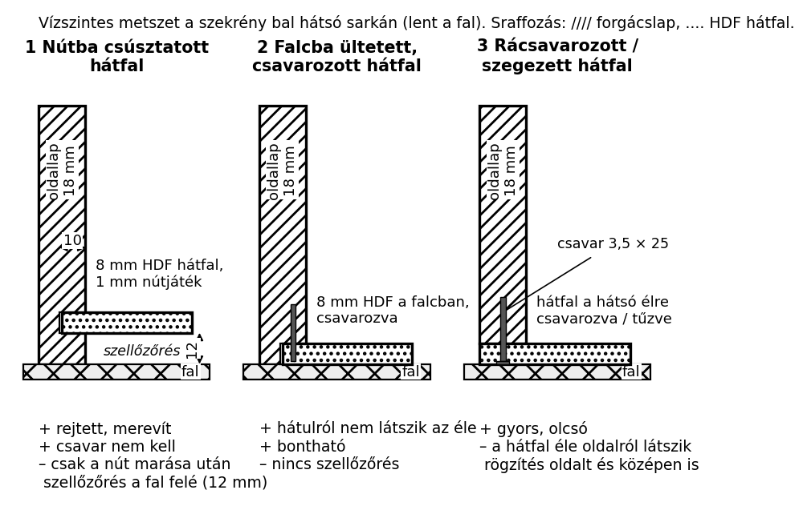
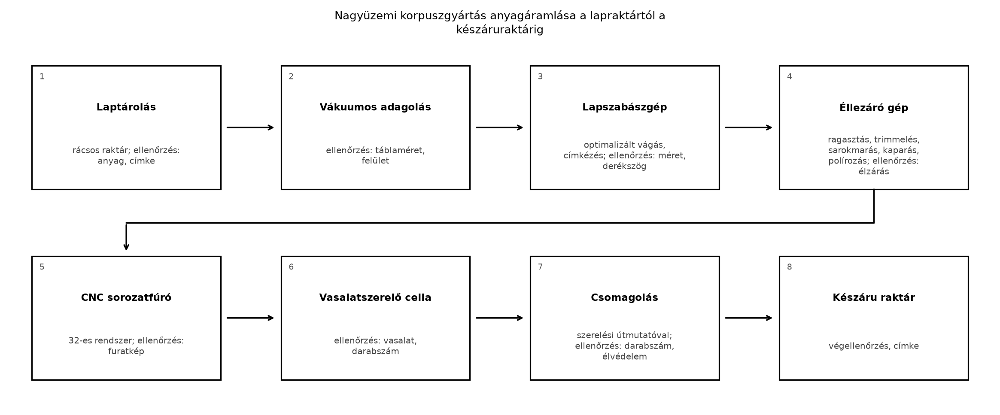

Egy vevő gardróbszekrényt rendel lapszerkezetű kivitelben, méretre a hálószobájába. A rajz elkészült, a szabásjegyzék is megvan. Két lehetőség áll előttünk: kisüzemben, néhány géppel legyártjuk, vagy nagyüzemi gépsoron futtatjuk le. A végeredménynek ugyanolyan pontosan szerelhetőnek, stabilnak és esztétikusnak kell lennie, de a munkafolyamat, a gépek és az ellenőrzési pontok eltérnek. Ebben az alfejezetben ezt a két utat hasonlítjuk össze, és lépésről lépésre felépítjük a korpuszbútor-gyártás technológiáját.
Képzelj el egy korpuszszekrényt lapra szerelt állapotban: két oldallap, egy fenék, egy fedlap (vagy felső korpuszösszekötő), egy hátfal, néhány polc, valamint ajtók és fiókok. A termék a műhelyben még lapokra bontva érkezik: az alkatrészeket csomagoljuk, a vevő vagy a szerelő a helyszínen csavarozza össze. A méretek például: magasság 2100 mm, szélesség 900 mm, mélység 520 mm. Anyaga 18 mm-es laminált forgácslap, éle 2 mm-es ABS, hátfala 8 mm-es HDF. A gyártás során minden alkatrésznek ugyanarra a bázisrendszerre kell készülnie, különben a 32-es rendszer furatai nem esnek egybe, és a bútor ferdén áll vagy a fiókok nem zárnak.
Definíció. A korpuszbútor olyan bútor, amelynek tartóvázát lapanyagból készült vízszintes és függőleges lapok alkotják, és ezeket mechanikus kötőelemekkel (pl. excenteres kötővasalatokkal) vagy ragasztással rögzítik egymáshoz. A leggyakoribb anyagok: laminált forgácslap, laminált MDF, rétegelt lemez, bútorlap.
Definíció. A lapra szerelt bútor (más néven KD: knock down – „szétszerelt állapotban szállított”) olyan korpuszbútor, amelyet a gyártó alkatrészeire bontva, csomagolva ad át, és a szerelést a felhasználó vagy a szakember a szerelési útmutató alapján, jellemzően kötőelemekkel végzi.
Definíció. A bázisél és bázislap a megmunkálás viszonyítási alapja. Minden méretet innen mérünk, és minden alkatrészre azonos irányban jelöljük. Ez biztosítja, hogy a furatkép, az élzárás és a szerelési méretek rendszert alkossanak.
Szabály. A korpuszgyártás során a műveleti sorrend mindig a következő fő lépésekből áll: a terv és dokumentáció ellenőrzése, szabás, méretellenőrzés, élzárás, élmegmunkálás, fúrás, vasalatszerelés, előszerelés, bontás, csomagolás, hibajavítás és dokumentálás.
Megjegyzés. A fenti sorrend a rajz–anyag–művelet hármas logikáját követi: a rajz alapján szabásjegyzék készül, a szabásjegyzékből szabás és további műveletek, a műveletek pedig visszahatnak a rajzra, ha hibát találunk.
A gyártás a A műszaki dokumentáció részei és a rajzkészlet, a Szabásjegyzék és anyagnorma és a Szabásterv és szabástérkép, anyagkihozatal alfejezetek szerint indul. Ellenőrizzük:
Példa. Kétszárnyú ruhásszekrény, külső méretei 2100 × 900 × 520 mm (magasság × szélesség × mélység). A szabásjegyzék kivonata:
| Tétel | Megnevezés | Db | Anyag | Kész méret h × sz × v (mm) | Szabási méret h × sz × v (mm) | Élzárás |
|---|---|---|---|---|---|---|
| 1 | Oldallap | 2 | Lam. forgácslap 18 | 2100 × 520 × 18 | 2100 × 518 × 18 | elülső hosszú él ABS 2 |
| 2 | Fenék | 1 | Lam. forgácslap 18 | 864 × 500 × 18 | 864 × 498 × 18 | elülső él ABS 2 |
| 3 | Fedlap | 1 | Lam. forgácslap 18 | 864 × 500 × 18 | 864 × 498 × 18 | elülső él ABS 2 |
| 4 | Polc | 2 | Lam. forgácslap 18 | 864 × 480 × 18 | 864 × 478 × 18 | elülső él ABS 2 |
| 5 | Ajtólap | 2 | Lam. forgácslap 18 | 2046 × 445 × 18 | 2042 × 441 × 18 | mind a 4 él ABS 2 |
| 6 | Hátfal | 1 | HDF 8 | 2080 × 882 × 8 | 2080 × 882 × 8 | nincs (nútban) |
A szabásjegyzékben a kész és a szabási méret eltér, ha az élzárás vagy a későbbi megmunkálás miatt ráhagyást vagy levonást kell figyelembe venni. A kész méret az élzáróval együtt értendő: a 2 mm-es ABS élzáró a kész méretbe beletartozik, ezért a lapot az élzárt éleknél élenként 2 mm-rel kisebbre kell szabni (az ajtólapnál mind a négy élen: 2046 − 2 × 2 = 2042 és 445 − 2 × 2 = 441 mm). Ha az élzáró gép élezető marása is dolgozik, annak ráhagyását (gyakran kb. 0,5 mm élenként) a gépkönyv szerint hozzá kell adni (ellenőrizendő). A polc hossza kész méretben 864 mm, mert a 18 mm-es oldallapok belseje 900 − 2 × 18 = 864 mm-es nyílást ad; a polc mélysége 480 mm, mert a korpusz 520 mm mély, a hátfal nútja előtt 20 mm marad, és a polc elöl további 20 mm-rel hátrahúzott (ajtóütközés és pánt helye): 520 − 20 − 20 = 480 mm. Az ajtólap szélessége a két ajtó közötti és a szélső hézagokkal: (900 − 3 × 3) / 2 = 445,5 ≈ 445 mm. A hátfal szélessége 864 + 2 × (10 − 1) = 882 mm (10 mm mély nút, 1 mm játék).
A szabást kisüzemben asztalos körfűrészgépen, formátumfűrészen vagy kézi merülőfűrésszel, vezetősínnel végezzük. A munkadarabot mindig a bázisélhez igazítjuk, derékszögű ütköző segítségével. A laminált lapot úgy fűrészeljük, hogy a látszó oldal ne pattogzzon ki (a fektetés irányát lásd a technológiai lap 3. lépésében), vagy olyan fűrészlapot használunk, amely csökkenti a kipattogzást.
Technológiai lap – lapszabás kisüzemben
Az élzárás a Furnér szabása, illesztése és táblásítása; furnérteríték és az Élzárás felületborítás után, éllezáró gépek és élmegmunkálás alfejezetek szerint történik. Kisüzemben éllezáró géppel vagy kézi élzárással (ragasztófóliás élzáróval, vasalóval) dolgozunk. Az élek anyaga leggyakrabban 0,4–2 mm vastag ABS vagy PP, esetleg melamin. Az élzárás célja a lap élmegmunkálásának védelme és a vizuális zárás.
Példa. A 18 mm-es laminált forgácslap éleit 2 mm-es ABS élzáróval zárjuk. Az ajtók, oldallapok, fenék és fedlap minden látható élét lezárjuk. A hátfal nútba csúsztatott oldalát nem kell élezni, ha a nútban rejtve marad. A felső és alsó él is zárható, ha a bútor magassága miatt az oldallapok élei látszódnak.
Az élzárás után az élmegmunkáló (trimmelő) egység levágja a felesleget, a saroklevágó lekerekíti a sarkokat, a kaparó egység simítja az élt, a polírozó adja a fényt. Kisüzemben ezt kézzel, maróval és élzáró szerszámokkal is elvégezhetjük.
A korpusz- és tárolóbútorok legfontosabb fúrási rendszere a 32-es rendszer, amelyet a Fúrógépek: hosszlyukfúró, sorozatfúró, 32-es rendszer és szerelvényhelyek alfejezet ismertet. Minden furat távolsága 32 mm többszöröse, a báziséltől pedig jellemzően 37 mm (ez a széltől és a vasalattól függően változhat – ellenőrizendő: gyártói katalógus). A polctartó furatok 5 mm átmérőjűek, mélységük 8–10 mm, egymástól 32 mm-re sorakoznak. A zsanérfuratok 35 mm átmérőjűek, a csésze mélysége 10–12 mm (a zsanér típusától függően), és ugyancsak a 32-es rendszer osztásához igazodnak. A fúrást kisüzemben:
Technológiai lap – fúrás kisüzemi korpuszhoz
Fontos: A fúrás pontossága akkor lesz jó, ha minden alkatrész ugyanabból a bázisélből indul. Ha az egyik oldallap furatait felülről, a másikat alulról méred, a polcok ferdén állnak.
A hátfal rögzítésének leggyakoribb módjai:

Szabály. A hátfal rögzítése legyen annyira erős, hogy a korpusz ne tudjon elmozdulni (torzulás, keresztirányú elcsúszás), és a hátfal ne váljon le szállítás közben. Nagy és nehéz szekrényeknél a nútba csúsztatott hátfal a legjobb; csak csavarozott megoldásnál a hátfal mindkét oldalán és középen is rögzíteni kell.
Az előszerelés (próbaszerelés) a leggazdaságosabb hibakereső módszer. Az alkatrészeket a furatokba helyezett vasalatokkal, kézzel, meghúzás nélkül összeállítjuk. Ellenőrizzük:
Példa. A ruhásszekrény előszerelésekor az oldallapokba szerelt excenterházak és a fenékbe, fedlapba csavarozott csapfejek (vagy metrikus csavarral rögzített csap) illeszkedését próbáljuk. Az excentert 180°-os fordulattal húzzuk meg. Ha az előszerelés sikeres, a bútort bontjuk, csomagoljuk, és a helyszínen a szerelő újra összeállítja.
A csomagolt bútorhoz tartozik a szerelési útmutató, amely lépésről lépésre, számozott ábrákkal mutatja az összeállítást. Az útmutató a Szerelési dokumentáció értelmezése és készítése; az összeállítás megszervezése alfejezetben részletesen tárgyalt. Minden alkatrészt és vasalatot azonosító számmal jelölünk, a csomagolásban a vasalatokat elkülönítve, zacskóban adjuk. A csomagolás védje az éleket és a felületeket: élsarkokra habfólia, sarokerősítők, a csomagban az ütésre érzékeny hátfalat külön merevítéssel.
A nagyüzemi gyártás ugyanazokat a lépéseket követi, de a szerszámgépek egymáshoz kapcsolódnak, az anyagmozgatás részben automatikus, és a darabszám nagy. A termékeket sorozatban, gyakran modulárisan, azonos furatképekkel és szabványosított élzáró anyagokkal gyártják.
Az alábbi folyamatábra a nagyüzemi gépsor anyagáramlását mutatja, lépésenként a gyártásközi ellenőrzési ponttal.

A nagyüzemi sor tipikus lépései:
Szabály. A nagyüzemi gyártás akkor gazdaságos, ha a termékek modulárisak, az alkatrészek méretei szabványosíthatók, és a sorozatnagyság elegendően nagy ahhoz, hogy az átállási idő és a gépköltség megtérüljön.
A korpuszbútor-gyártás három gépe a lapszabászgép, az éllezáró gép és a sorozatfúró. Kisüzemben ezek különálló gépek, nagyüzemben automatizált sorokká kapcsolhatók.
Megjegyzés. A gépek paraméterei (előtolás, fúrási sebesség, ragasztó hőmérséklete) a gépkönyvből és a gyártó adatlapjából állapíthatók meg, és üzemenként, termékenként változnak.
A korpuszbútorok leggyakoribb alapanyaga a laminált forgácslap (18 mm, 16 mm), melyet 1, 2 vagy 0,5 mm vastag ABS/PP élzáróval zárunk. A választás szempontjai:
Példa. A ruhásszekrényhez válasszunk 18 mm laminált forgácslapot, fehér melamin felülettel, éleit 2 mm fehér ABS élzáróval zárjuk. Az ajtók azonos anyagúak, a hátfal 8 mm HDF, fehér, nútba csúsztatva. A fiókok 16 mm-es laminált forgácslapból készülnek, 1,5 mm ABS élzáróval.
Készítsünk egy 2100 × 900 × 520 mm-es ruhásszekrényt. Az anyagárak mintaárak:
| Anyag | Egység | Egységár (Ft) |
|---|---|---|
| Lam. forgácslap 18 mm | m² | 7 000 |
| HDF 8 mm | m² | 4 500 |
| ABS élzáró 2 mm | fm | 120 |
| Excenter kötővasalat | db | 80 |
| Zsanér | db | 500 |
| Polctartó | db | 60 |
| Csavar | doboz | 800 |
Számítás – szabásjegyzék és anyagnorma. A szükséges lapanyagot m²-ben és táblában is meghatározzuk. Egy 2800 × 2070 mm-es tábla területe: . A fenti bútor alkatrészeinek területe:
Összesen: 2,184 + 0,864 + 0,829 + 1,821 = 5,698 m². Ehhez jön a szabási ráhagyás, a hibakiejtés és a vágási veszteség, például +10–15%. Legyen a ráhagyással növelt, felhasznált anyagmennyiség 6,3 m² (5,698 · 1,10 ≈ 6,27 m²). A szabástérkép szerint a 4 hosszú alkatrész egy 2800 × 2070 mm-es táblán elfér, de a maradék sávba a 864 mm hosszú alkatrészek nem, ezért két táblát kell vásárolni (2 × 5,796 = 11,592 m², 11,592 · 7 000 ≈ 81 144 Ft); a felhasznált rész (6,3 m²) költsége 44 100 Ft, a maradék (kb. 5,3 m²) raktárra kerül, és a következő munkában hasznosul. A költségtáblában a felhasznált részt számoljuk. A hátfal: 2,08 × 0,882 = 1,83 m², egy 8 mm-es HDF táblából (jellemzően 2,8 × 2,07 m = 5,8 m²) kijön. Az élzáró hosszát az élek hossza adja: oldallapoknál 4 él × 2,1 m + 4 él × 0,52 m, stb. A pontos mennyiséget a szabásjegyzékből összesítjük.
Költségszámítás (mintaadatok)
| Költségsor | Mennyiség | Egység | Egységár (Ft) | Érték (Ft) |
|---|---|---|---|---|
| Lam. forgácslap | 6,3 | m² | 7 000 | 44 100 |
| HDF hátfal | 1,83 | m² | 4 500 | 8 235 |
| ABS élzáró | 24,5 | fm | 120 | 2 940 |
| Excenter kötővasalat | 16 | db | 80 | 1 280 |
| Zsanér | 6 | db | 500 | 3 000 |
| Polctartó | 16 | db | 60 | 960 |
| Csavar | 1 | doboz | 800 | 800 |
| Anyagköltség összesen | 61 315 |
Az anyagköltséghez jön a munkabér, annak járuléka, az energia, a géphasználat és az általános költség. A teljes önköltség számítását az Költségek és önköltség: anyag-, bér-, általános költség, elő- és utókalkuláció alfejezetben mutatjuk be. A lapanyag 6,3 m²-e már tartalmazza a 10–15 % szabási ráhagyást és veszteséget, ezért a ráhagyást ne számítsd még egyszer; a végső árnál a mintaárakat frissíteni kell.
Műveletterv. A következő táblázat a műveleti sorrendet és az ellenőrzési pontokat mutatja.
| Ssz. | Művelet | Gép / szerszám | Ellenőrzés |
|---|---|---|---|
| 1. | Terv és szabásjegyzék átvétele | Íróasztal, rajz | méretek, anyagok |
| 2. | Szabás | Körfűrész, formátumfűrész | méret, derékszög |
| 3. | Élzárás | Élzáró gép / kézi | zárás, szín, illesztés |
| 4. | Élmegmunkálás | Trimmelő, saroklevágó | élek simák, sarkok záródnak |
| 5. | Fúrás | Hosszlyukfúró, állványos fúró | furatkép, mélység, pozíció |
| 6. | Hátfal nút marása | Felsőmarógép | nút mérete, párhuzam |
| 7. | Előszerelés | Kézi szerszámok | derékszög, hézagok, vasalatok |
| 8. | Bontás, élek védelme | Csomagoló | alkatrészlista, védőcsomagolás |
| 9. | Vasalatok csomagolása | Címkéző | darabjegyzék, útmutató |
| 10. | Végellenőrzés | Mérőeszközök, lista | minden tétel megvan |
A korpuszbútor gyártásánál az alábbi szempontokat ellenőrizzük:
Az eltéréseket a Minőségbiztosítás, gyártásközi ellenőrzés és kísérő dokumentáció alfejezet szerint jelöljük, és a hibás alkatrészt javítjuk vagy cseréljük.
Egy asztalos kisüzemben kétajtós gardróbot gyártott. Az oldallapok fúrását hosszlyukfúróval végezte, de az egyik oldallapot megfordította, a bázisél a másik oldalra esett. Az előszereléskor a polcok ferdén álltak, a zsanérok nem csukódtak rendesen. A hiba kiderült, az oldallapot újra kellett fúrni, ami anyag- és időveszteség volt. Tanulság: a bázisél jelölése és a fúrási sorrend rögzítése nem formalitás, hanem a gyárthatóság feltétele. A fúrósablon a bázisélből induló furatképpel és a „bal/jobb” jelöléssel megelőzi a hibát.
Egy másik esetben a nagyüzemi gyártó a szabászgép optimalizáló programjában rosszul adta meg az élzáró anyag vastagságát. A program a kész méretet vágta, de az élzárás után a lap 1,5 mm-rel nagyobb lett. A fúrási furatok ezért nem illeszkedtek. A megoldás az volt, hogy a szabászgép méretét a kész méret és az élezárás vastagságának különbségére programozták, és minden anyagváltásnál próbadarabot vágtak.
Önellenőrzés – válaszok
1. feladat (A) Sorold fel a korpuszbútor-gyártás öt legfontosabb gépi műveletét, és írd le, mit csinál az éllezáró gép.
2. feladat (A) Mi a különbség a lapra szerelt bútor és a helyszínen, ragasztással szerelt bútor között? Adj egy-egy példát.
3. feladat (B) Egy szekrény oldallapján a polctartó furatok sorát fúrod. Az oldallap magassága 1800 mm. Hány polctartó furat fúrható, ha a felső és alsó széltől 100 mm-re nem fúrunk, és a raszter 32 mm? Számold ki a furatok számát és az első furat helyét.
4. feladat (B) A 18 mm-es oldallapok közti belső szélesség 864 mm; a hátfal 8 mm vastag, a nút 10 mm mély, és a hátsó éltől 12 mm-re van. Mekkora a hátfal szélessége (1 mm-es nútjátékkal), és mennyi a hasznos belső mélység 520 mm-es oldallapnál?
5. feladat (C) Miért nem elég csak a szabásjegyzéket átadni a szabászgépnek a nagyüzemi gyártásban? Mi mindent kell még megadni a szabászgép programjához?
6. feladat (D) Készíts művelettervet a fenti kétajtós ruhásszekrényhez, és jelöld meg az ellenőrzési pontokat. A művelettervben legalább 8 lépést szerepeltess, és minden lépés után add meg az ellenőrzés módját.
1. feladat Az öt legfontosabb gépi művelet: szabás, élzárás, élmegmunkálás, fúrás, csomagolás (vagy vasalatszerelés). Az éllezáró gép az élzáró anyagot ragasztóval felviszi a lap élére, majd a felesleget levágja, lemarja, csiszolja, és a sarkokat lekerekíti vagy lesimítja.
2. feladat A lapra szerelt bútort a gyártó alkatrészekre bontva, csomagolva szállítja, és a vevő vagy a szerelő a helyszínen, kötőelemekkel szereli össze; példa: konyhaszekrény, gardrób. A ragasztással szerelt bútort a gyártó egyben, ragasztással és szorítással állandó kötéssel készíti el, a helyszínen jellemzően csak elhelyezik; példa: tömörfa komód.
3. feladat A furatok a felső széltől 100 mm és az alsó széltől 100 mm közötti tartományba esnek. A furatos sáv magassága: 1800 − 100 − 100 = 1600 mm. A furatok száma = (1600 / 32) + 1 = 50 + 1 = 51 furat. Az első furat helye a felső széltől: 100 mm (ha a bázis a felső él). Ha a bázist alulról vesszük, az első furat alulról 100 mm.
4. feladat A hátfal szélessége: . A hasznos belső mélység: (a hátsó éltől mért nút-távolság és a hátfal vastagsága csökkenti). Ellenőrzés: a hátfal mindkét oldalon 9 mm-t ül a nútban, 1 mm játékkal.
5. feladat A szabászgép programjához a szabásjegyzéken túl meg kell adni: a tábla méretét és anyagát, a szabásirányt (a fedőréteg iránya), a vágási ráhagyást, az élzárás vastagságát, a fűrészlap vágási szélességét, a vágási sorrendet és az optimalizálás célját (pl. maximális anyagkihozatal), valamint a címkézési és azonosító adatokat.
6. feladat Például:
| Ssz. | Művelet | Gép | Ellenőrzés |
|---|---|---|---|
| 1 | Rajzdokumentáció és szabásjegyzék átvétele | Íróasztal | méret, anyag, darabszám |
| 2 | Táblafelosztás | Körfűrész | méret, derékszög |
| 3 | Élzárás | Élzáró gép | él színe, zárási pontosság |
| 4 | Élmegmunkálás | Trimmelő, saroklevágó | él sima, sarok zárt |
| 5 | Hátfal nút marása | Felsőmarógép | nút mélység, szélesség, párhuzam |
| 6 | Fúrás – oldallapok | Hosszlyukfúró | 32-es raszter, báziséltől 37 mm (ell.) |
| 7 | Fúrás – ajtók | Állványos fúrógép | zsanérfuratok mérete, helye |
| 8 | Vasalatszerelés | Kézi szerszám | excenterek, zsanérok illeszkedése |
| 9 | Előszerelés | Kézi szerszám | derékszög, hézagok, hátfal |
| 10 | Bontás, csomagolás | Csomagoló | alkatrészlista, védőcsomagolás |
A korpuszbútor-gyártás technológiája a terv és szabásjegyzék ellenőrzésével kezdődik. A fő műveletek: szabás, élzárás, élmegmunkálás, fúrás, vasalatszerelés, előszerelés, bontás, csomagolás és ellenőrzés. A szabásjegyzék a rajz alapján készül, és a bázisél-bázislap rendszer a mérés és fúrás viszonyítási alapja. A 32-es rendszer a furatok moduláris, 32 mm-es raszterét jelenti, a báziséltől jellemzően 37 mm-re (ellenőrizendő a vasalathoz). A hátfal rögzíthető nútba csúsztatva vagy csavarozva; a nútba csúsztatott hátfal merevíti a korpuszt. A kisüzemi gyártásban az egyes gépeket kézi anyagmozgatással, a nagyüzemi gyártásban gépsorral kapcsoljuk össze (lapszabászgép, éllezáró, sorozatfúró). A csomagolt bútorhoz mindig tartozik szerelési útmutató és csomagolási lista. A gyártásközi és végellenőrzés biztosítja, hogy a termék szerelhető, méretpontos és esztétikus legyen. Továbbvitt eredmény: ez a gyártási folyamat az alapja a tömörfa szekrénygyártásnak, a beépített és konyhabútoroknak, a szerelési dokumentációnak és a gyártástervezésnek.
Forrástípusok: faipari gépkönyvek (lapszabászgép, éllezáró, sorozatfúró, hosszlyukfúró), bútorvasalat-gyártók katalógusai (excenter, zsanér, polctartó, fiókcsúszók), a faipari gépbiztonsági szabványok (MSZ EN ISO 19085 sorozat), a lapszerkezetű bútorokra vonatkozó műszaki előírások, és a fapor-expozícióra vonatkozó munkavédelmi szabályok. Ellenőrizendő: a 32-es rendszer pontos bázistávolsága (37 mm) az adott vasalathoz, a zsanérfurat mérete és mélysége a zsanér típusához, a példában használt táblaméretek, anyagárak és anyagkihozatal, a formaldehid-kibocsátási osztály jelölése, valamint a pontos gép- és anyagparaméterek (ragasztó hőmérséklete, előtolás, élzáró vastagság) a használt géptípushoz.